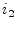

| (9.194) | ||
| (9.195) |
A transmission line is usually described by its ABCD-matrix. (Note that in ABCD-matrices, i.e. the chain matrix representation, the current  is defined to flow out of the output port.)
These can easily be recalculated into impedance parameters.
| (9.194) | ||
| (9.195) |
Or in admittance parameter representation it yields
whence  denotes the propagation constant
and
denotes the propagation constant
and
 is the length of the transmission line.
is the length of the transmission line.  represents the
characteristic impedance of the transmission line. The Y-parameters
as defined by eq. (9.199) can be used for the microstrip
line. For an ideal, i.e. lossless, transmission lines they write
accordingly.
represents the
characteristic impedance of the transmission line. The Y-parameters
as defined by eq. (9.199) can be used for the microstrip
line. For an ideal, i.e. lossless, transmission lines they write
accordingly.
| (9.197) | ||
| (9.198) | ||
| (9.199) | ||
| (9.200) |
The scattering matrix of an ideal, lossless transmission line with
impedance  and electrical length
and electrical length  writes as follows.
writes as follows.
| (9.201) |
| (9.202) |
 |
(9.203) |
With  = 299 792 458 m/s being the vacuum light velocity.
Adding attenuation to the transmission line, the quantity
= 299 792 458 m/s being the vacuum light velocity.
Adding attenuation to the transmission line, the quantity  extends to:
extends to:
| (9.204) |
Another equivalent equation set for the calculation of the
scattering parameters is the following:
With the physical length  of the component, its impedance
of the component, its impedance
 and propagation constant
and propagation constant  , the complex propagation
constant
, the complex propagation
constant  is given by
is given by
| (9.205) |
where  is the attenuation factor and
is the attenuation factor and  is the (real)
propagation constant given by
is the (real)
propagation constant given by
| (9.206) |
where is the effective dielectric constant and is the TEM propagation constant for the equivalent transmission line with an air dielectric.
| (9.207) |
The expressions used to calculate the scattering parameters are given by
| (9.208) | ||
| (9.209) |
with  being the normalized impedance and
being the normalized impedance and  is the normalized
admittance.
is the normalized
admittance.